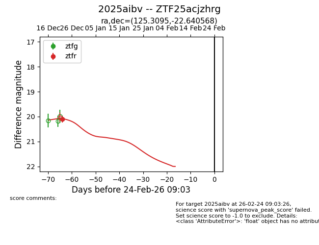
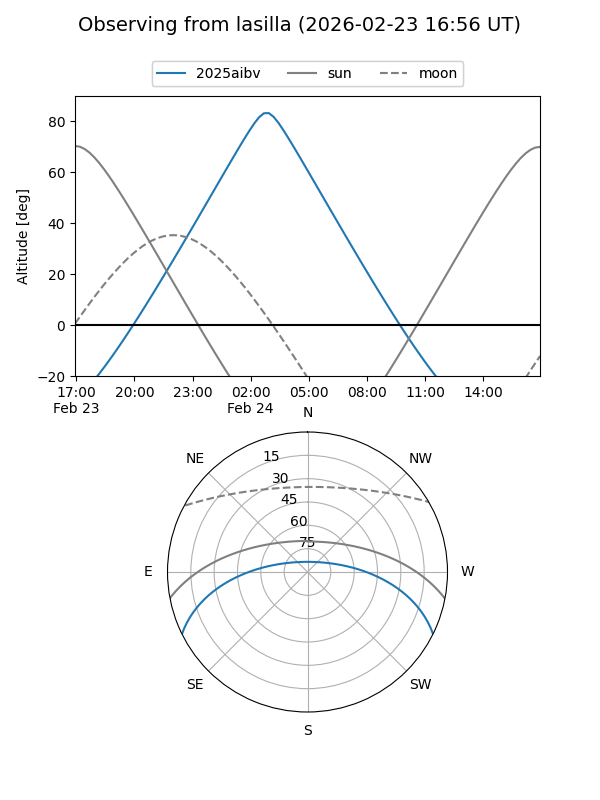
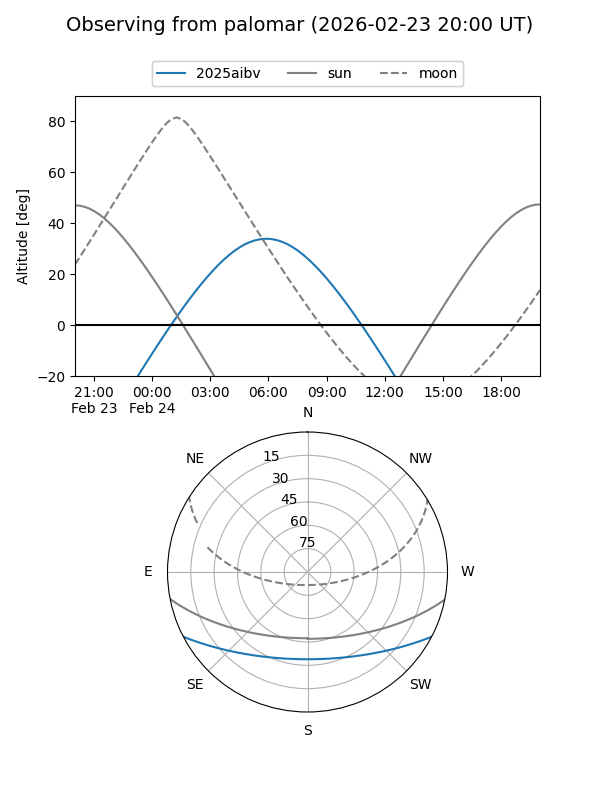
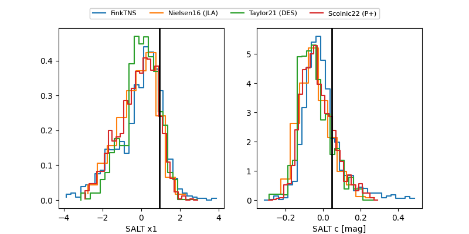

2025aibv
Target 2025aibv at 2025-12-24 19:03
Aliases and brokers:
FINK: fink-portal.org/ZTF25acjzhrg
Lasair: lasair-ztf.lsst.ac.uk/objects/ZTF25acjzhrg
ALeRCE: alerce.online/object/ZTF25acjzhrg
TNS: wis-tns.org/object/2025aibv
YSE: ziggy.ucolick.org/yse/transient_detail/2025aibv
alt names
ZTF25acjzhrg (ztf,fink_ztf)
2025aibv (tns,yse)
Coordinates:
equatorial (ra, dec) = 125.3095,-22.64057
equatorial (HMS+DMS) = 08:21:14.29,-22:38:26.04
galactic (l, b) = (243.4749,+7.94055)
Flags:
Photometry:
last ztfr=20.11
1 ztfr detections
Lightcurve

Visibility


Additional plots
